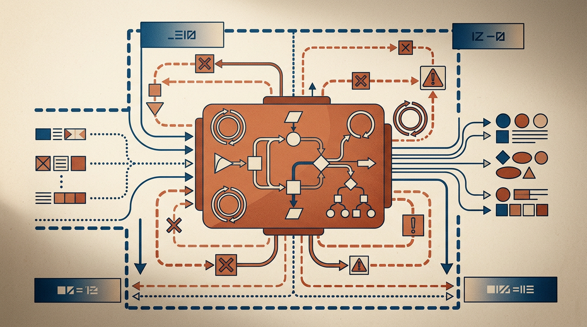

Agentes de IA não precisam de mais ferramentas
Existe uma tentação comum quando um agente começa a falhar: adicionar outra integração.
Se ele não consulta dados, conectamos uma API. Se não executa tarefas, adicionamos um servidor MCP. Se ainda erra, colocamos mais contexto, mais funções e mais automações.
O resultado costuma ser um agente com muitas capacidades e poucas fronteiras. Ele sabe fazer várias coisas, mas não sabe quando deve fazer cada uma, quais dados pode receber, o que precisa devolver ou quando deve parar.
O problema não é falta de ferramentas. É falta de contrato.
Uma ferramenta disponível pode ser chamada. Uma ferramenta contratada pode ser chamada dentro de condições explícitas. Essa diferença parece pequena, mas muda segurança, previsibilidade, auditoria e manutenção.

Ferramenta disponível não é ferramenta contratada
Imagine um agente com acesso a uma função chamada enviar_email. A descrição diz apenas: “Envia um email”.
Essa ferramenta está disponível. O agente talvez descubra sozinho que precisa escolher destinatários, assunto, conteúdo, remetente e momento de envio. Também precisa decidir se pode enviar mensagens externas sem revisão humana.
Agora imagine a mesma ferramenta com um contrato:
- Quando usar: somente depois de uma aprovação explícita para comunicação externa.
- Entrada: destinatário, assunto, texto e identificador da aprovação.
- Saída: identificador da mensagem e estado do envio.
- Efeitos colaterais: envia uma mensagem real e não pode desfazer o envio.
- Limites: apenas domínios autorizados e uma mensagem por aprovação.
- Erro: não envia nada quando faltar aprovação, destinatário válido ou conteúdo.
Essa ferramenta está contratada. O agente não precisa improvisar sua fronteira de atuação.
Contrato não é documentação bonita para preencher depois. É parte da interface. Ele transforma uma intenção vaga em uma operação verificável.
O mesmo vale para uma ferramenta de leitura. “Consultar pedidos” pode significar consultar todos os pedidos, apenas pedidos de uma conta, dados resumidos ou informações pessoais completas.
Uma versão contratada pode dizer: “Consulta pedidos do cliente autenticado, retorna identificador, estado, data e valor, e nunca expõe endereço ou dados de pagamento”.
Essa definição reduz espaço para interpretação. Também facilita trocar a implementação sem alterar o comportamento esperado pelo agente.
O contrato mínimo cabe em seis perguntas
Não é preciso criar um padrão enorme para cada integração. Um contrato pequeno já resolve grande parte dos riscos.
- Quando usar? Descreva intenção e condição de uso. Diga quando a ferramenta é adequada e quando outra ferramenta deve ser escolhida.
- Qual entrada? Liste campos obrigatórios, formatos, valores permitidos e origem dos dados.
- Qual saída? Defina estrutura, estados possíveis e significado de cada campo.
- Quais efeitos colaterais? Informe o que muda fora do agente, como envio, cobrança, criação, alteração ou exclusão.
- Quais limites? Declare escopo, volume, frequência, contas, ambientes e recursos permitidos.
- Como falha? Explique erros esperados, ações seguras e situações que exigem intervenção humana.
Considere uma ferramenta hipotética para criar uma tarefa:
criar_tarefa(titulo, responsavel, prazo, idempotency_key)
O contrato precisa dizer se o prazo usa horário local ou UTC. Precisa dizer se o responsável é obrigatório. Precisa explicar o que acontece quando a tarefa já existe com a mesma chave de idempotência.
Também precisa diferenciar falha de validação, falta de permissão, indisponibilidade temporária e criação concluída. Retornar apenas “deu certo” ou “deu errado” força o agente a adivinhar.
Saída previsível permite decisões previsíveis:
{ estado: "criada", tarefa_id: "t-123", repetida: false }
Ou:
{ estado: "repetida", tarefa_id: "t-123", repetida: true }
O agente não precisa criar uma segunda tarefa só porque uma tentativa anterior terminou sem resposta clara.
Permissão precisa fazer parte do contrato
Uma ferramenta não deve explicar apenas o que consegue fazer. Deve declarar para quem, em qual ambiente e sob qual autorização pode fazer isso.
“Atualizar cadastro” é uma capacidade ampla demais. O contrato precisa restringir o objeto e o contexto:
- atualizar somente cadastro do usuário autenticado;
- alterar apenas telefone e endereço;
- bloquear mudanças em email, identidade e dados financeiros;
- exigir confirmação antes de salvar;
- registrar quem solicitou, quem aprovou e qual versão foi aplicada.
Permissão também pode ser temporal. Uma ferramenta pode operar em ambiente de teste, mas ficar indisponível em produção. Pode ler dados durante uma investigação, mas não exportá-los. Pode preparar uma ação, mas não executá-la.
Essa separação é especialmente importante em automações com efeitos externos. O agente pode montar uma cobrança, uma publicação ou uma alteração de configuração. A execução pode exigir aprovação humana.
Um fluxo seguro pode dividir a operação em duas ferramentas:
preparar_publicacaocria rascunho, valida texto e mostra destino;publicar_aprovadoexige identificador do rascunho e aprovação registrada.
O agente continua útil, mas não transforma uma interpretação incerta em ação irreversível.
A aprovação humana também precisa de contrato. Defina o que a pessoa está aprovando, por quanto tempo a aprovação vale, quais campos podem mudar depois e o que invalida a decisão.
Uma aprovação para enviar uma mensagem a um destinatário não deveria autorizar automaticamente outra mensagem para uma lista inteira.
Idempotência evita que erro vire duplicação
Agentes operam em ambientes com rede instável, limites de tempo e respostas incompletas. Uma chamada pode ter sido concluída mesmo quando o agente não recebeu a resposta.
Se a ferramenta não for idempotente, a tentativa de recuperação pode duplicar uma cobrança, criar duas tarefas ou enviar o mesmo aviso várias vezes.
Para operações de escrita, use uma chave que identifique a intenção:
criar_pagamento(valor, cliente_id, idempotency_key)
O contrato deve informar que chamadas repetidas com a mesma chave retornam o resultado original. Também deve rejeitar a reutilização da chave com parâmetros diferentes.
Idempotência não resolve todos os problemas. Ainda é preciso definir limites, expiração da chave e comportamento em falhas parciais. Mas ela transforma repetição de uma ameaça em uma propriedade controlada.
Observabilidade precisa mostrar intenção e efeito
Um log que registra apenas “ferramenta chamada” não explica muito. Para revisar uma decisão, precisamos saber qual intenção chegou, quais dados foram usados, qual permissão foi aplicada e qual efeito aconteceu.
Registre, conforme o nível de sensibilidade permitido:
- identificador da execução;
- ferramenta e versão do contrato;
- agente, usuário ou serviço solicitante;
- entrada validada, sem expor segredos;
- aprovação relacionada;
- resultado e duração;
- erro classificado;
- efeito externo confirmado ou não confirmado.
Não é necessário despejar todo contexto em cada log. O objetivo é reconstruir a operação sem coletar dados que não precisam estar ali.
Mensagens de erro também fazem parte da interface. “Erro interno” não orienta o próximo passo. “Permissão insuficiente para alterar ambiente de produção” permite interromper, pedir aprovação ou escolher outro caminho.
Reversão deve existir antes da primeira execução
Nem toda ação pode ser desfeita. O contrato precisa dizer isso claramente.
Quando houver reversão, defina a operação correspondente:
criar_regra pode ter remover_regra ou restaurar_versao_anterior.
Quando não houver reversão, reduza o alcance da ação. Prefira rascunho, simulação, lote pequeno ou ambiente de teste. Exija aprovação para o passo que cruza a fronteira.
Também existem efeitos parcialmente reversíveis. Uma alteração de configuração pode ser restaurada, mas o período de indisponibilidade não pode ser recuperado. Um email pode ser marcado como enviado, mas não retirado da caixa de entrada.
O contrato deve tornar esse custo visível antes da execução, não depois do incidente.
Revise ferramentas como código de produção
Contratos envelhecem. A API muda, permissões aumentam, campos ganham novos significados e uma ferramenta passa a ser usada em contextos que ninguém imaginou.
Revise cada ferramenta quando:
- o comportamento real divergir do contrato;
- um novo efeito colateral aparecer;
- o agente escolher a ferramenta em situações erradas;
- houver mudança de API, escopo ou permissão;
- o custo de observar ou reverter a operação aumentar;
- uma ferramenta mais simples cobrir a mesma necessidade.
Manter ferramenta não significa mantê-la disponível para sempre. Uma integração pode ser aposentada quando não possui dono, não tem métricas úteis, depende de credenciais antigas ou oferece risco maior que seu benefício.
Antes de remover, procure todos os chamadores. Bloqueie novas chamadas. Emita aviso claro para consumidores. Migre para o contrato substituto. Preserve registros necessários para auditoria. Só depois remova a implementação.
Versão de contrato ajuda durante a transição. O agente pode continuar usando a versão anterior enquanto consumidores migram, desde que a diferença seja explícita e o prazo de retirada esteja definido.
Não aposente uma ferramenta apenas escondendo-a da lista. Revogue permissões, desligue credenciais, remova rotas e confirme que nenhum fluxo ainda depende dela.
Checklist para contratar uma ferramenta
Antes de entregar uma nova integração a um agente, responda:
- Qual problema específico esta ferramenta resolve?
- Quando o agente deve usá-la?
- Quando ele deve escolher outra ferramenta ou pedir ajuda?
- Quais entradas são obrigatórias e quais são proibidas?
- Qual saída permite decidir o próximo passo sem adivinhação?
- Quais dados sensíveis entram e saem?
- Quais efeitos acontecem fora do sistema?
- Quais permissões limitam a operação?
- Quais ações exigem aprovação humana?
- Chamadas repetidas são seguras?
- Como o sistema registra intenção, autorização, resultado e erro?
- Existe simulação, rascunho ou reversão?
- Qual limite impede volume ou escopo excessivo?
- Quem revisa o contrato?
- Como a ferramenta será desativada?
Se essas respostas não cabem em uma página, o problema talvez não seja a falta de documentação. Talvez a ferramenta esteja tentando fazer coisas demais.
Agentes melhores não nascem de catálogos maiores. Nascem de fronteiras mais claras.
Uma ferramenta contratada sabe quando entra, o que recebe, o que devolve, o que muda e quando deve falhar. Isso dá ao agente menos espaço para improvisar e dá ao time mais espaço para confiar.
Antes de adicionar a próxima integração, escreva o contrato da atual. Muitas vezes, a maior melhoria de um agente não está em dar mais uma capacidade a ele. Está em tornar a capacidade que já existe previsível.